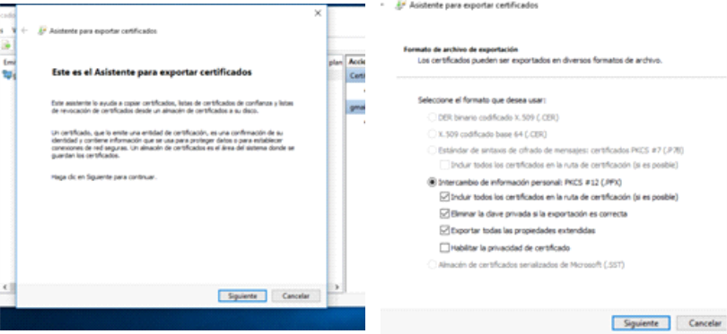

Cómo generar los certificados
Al iniciar, abrir Windows PowerShell (Inicio - > Ejecutar -> PowerShell -> enter)
Ingresar Get-Command -Module PKI
Con New-SelfSignedCertificate con las diferentes personalizaciones exclusivas,
en este caso es para migración de máquinas virtuales a Azure desde una plataforma OnPremises,
todo depende del tipo de certificado, longitud de RSA, algoritmo que utiliza. Es la
personalización que se le deberá dar al tipo de certificado.
Abrimos una consola MMC (Inicio -> Ejecutar -> mmc -> enter)
Archivo -> Agregar o quitar complemento
Seguidamente buscamos el complemento disponible: Certificados y pulsamos Agregar. Le
decimos que sí para la cuenta de usuario y pulsamos finalizar y Aceptar.
En Certificados de usuario actual, expandimos. Vamos a Personal -> Certificados. Vemos
que el certificado que se creó figura en el listado. Al dar doble click, vemos que el
certificado aún no está avalado por una entidad de certificación (CA) o no es de
confianza.
Para lograr la confianza del certificado vamos a exportarlo. Hacemos click derecho en el
certificado -> todas las tareas -> Exportar
Hacemos click en siguiente -> marcamos si, exportar la clave privada y marcamos los tres
primeros ítems menos habilitar la privacidad de certificado y siguiente

Establecemos una contraseña y su confirmación que nos pedirá al momento de instalar el
certificado, siguiente, indicamos dónde colocarlo con examinar y le damos un nombre al
archivo, guardar. Luego clickeamos en siguiente y por último en finalizar.
Sobre el certificado exportado le damos doble click, nos abrirá una ventana donde
indicamos utilizar la opción de Usuario actual, siguiente -> siguiente
Marcamos la opción Colocar los certificados en el siguiente almacén, examinar y
buscamos Entidades de certificación raíz de confianza, marcamos y aceptamos.
Clickeamos en siguiente y finalizar.
Nos aparecerá un mensaje de que está a punto de instalar un certificado de una
entidad certificadora ca, click en SI, aparecerá un mensaje de confirmación de que
la importación se completó correctamente, aceptar.
Para comprobar, vamos a Entidades de certificación raíz de confianza -> Certificados,
y buscamos el nombre del certificado que creamos, otra manera de verlo es hacer doble
click en el certificado ubicado en Personal -> Certificados -> [nombre del certificado creado]
y aparecerá datos del certificado.
ste certificado exportado es el mismo que ahora vamos a exportar con extensión .cer lo
hacemos de este modo:
Personal -> Certificados -> [nombre del certificado] -> botón derecho -> Todas las tareas -> Exportar,
siguiente acá nos muestra que es del tipo .cer, siguiente nos envía a colocar un nombre y su lugar
dónde lo guardaremos
Este último certificado .cer o certificado de seguridad generado, es el que vamos a subir a nuestro
servicio como por ej Microsoft Azure o cualquier otro servicio, de esta manera es el proceso de
crear certificados CA autofirmados.